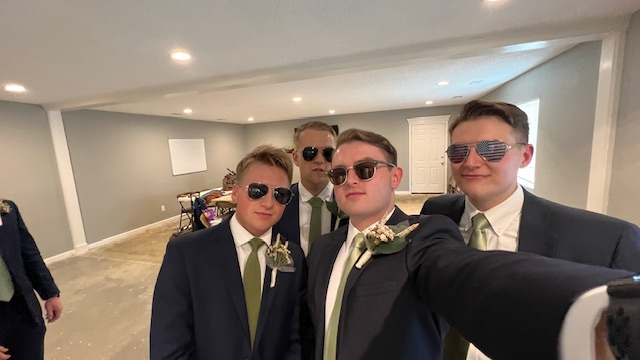
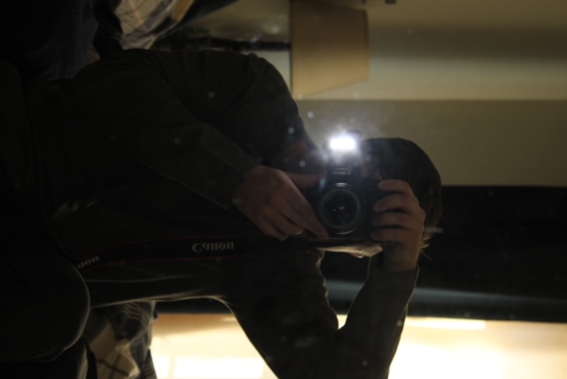
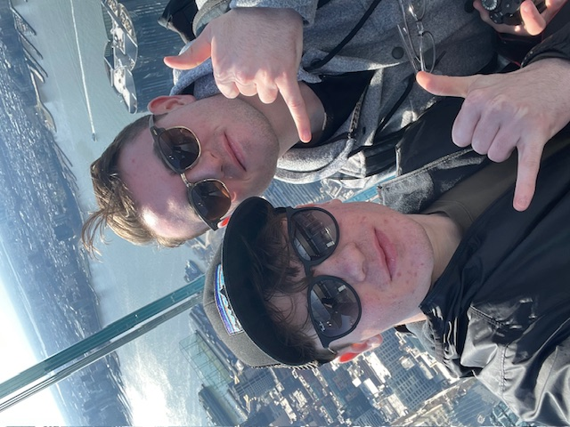
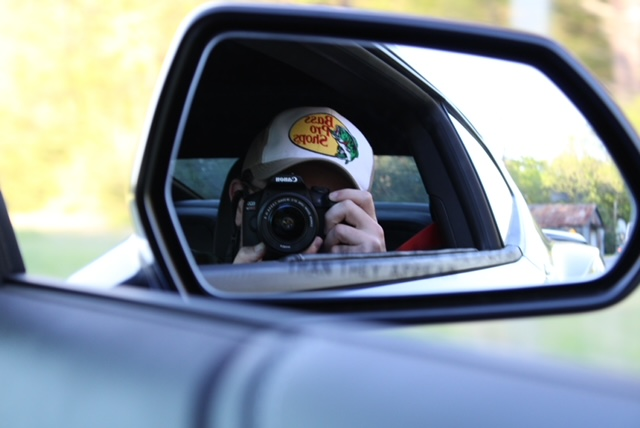
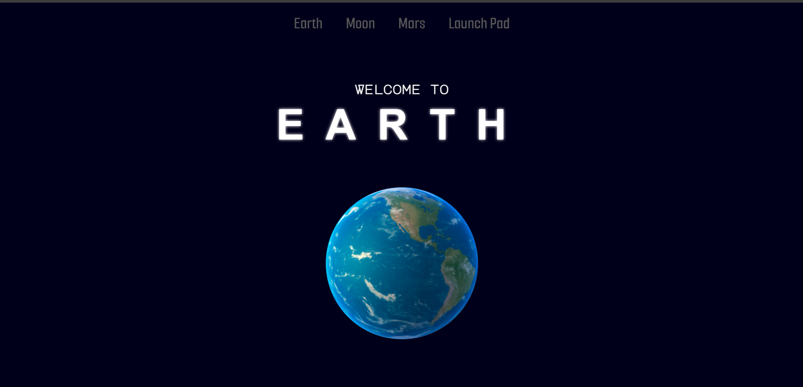

Hello, my name is Christian_
I am a
software engineer.





<About>
More About Me_
Both my academic background and future path are centered around Computer Science. I first attended Indiana Bible College, where I received my Associate degree in Christian Leadership. I am currently pursuing my Associate in Science through Gaston College with future plans to attend UNC Charlotte to a Bachelors degree in Computer Science. Along with multiple certifications and various coursework, I have built a repertoire for a prospective Software Engineer.
I have several different hobbies and passions. I like to workout at the gym. I LOVE cars, both driving and admiring. I also love Coding, I have several different ideas/projects that I'm always working on!
As a current Computer Science Student and an Aspiring Software Engineer, a combination of my Hard and Soft skills have been developed both in and out of the classroom.
I have several different hobbies and passions. I like to workout at the gym. I LOVE cars, both driving and admiring. I also love Coding, I have several different ideas/projects that I'm always working on!
As a current Computer Science Student and an Aspiring Software Engineer, a combination of my Hard and Soft skills have been developed both in and out of the classroom.
<Projects>
My Projects_
OpenCV Vehicle Tracker_
Efficiently monitor customer through-put with computer vision for local restaurant. Reported accurate metrics to increase productivity and efficiency of company practices.
-
Python
-
OpenCV
-
LLM
-
Artificial Intelligence
-
Computer Vision
-
PCB

3D Planetarium_
Designed and created a digital experience that allowed visitors to visit and learn about the many planetary bodies in our solar system.
Stockly_
News aggregator that allows users to monitor investor sentiment and research latest news in their portfolio.
YeTech Solutions_
Designed the first website for a marketing agency leveraging Artificial Intelligence for their clients businesses.
Chick-fil-A_
Worked on several software projects that evolved into the stand-alone OpenCV Vehicle Tracker project.